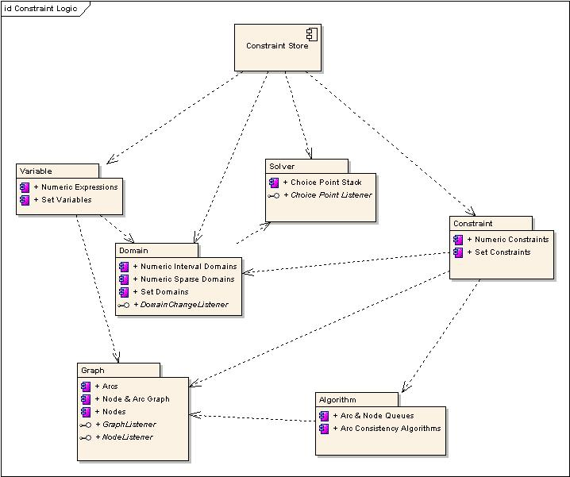

| jOpt | ||
| Java OPL Implementation |
| jOpt | ||
| Java OPL Implementation |
jOpt Arc Consistency ImplementationjOpt's CSP solver supports many consistency concepts. It allows constraints to be defined on sparse, interval, and set domains for int, long, float, and double Java types as well as set domains for generic objects. The solver also supports node, binary, and generic arcs (including ternary, hyper, and global arcs).The default algorithm for the solver is based on AC-3 and maintains interval consistency on floating-point domains, bounds consistency on integer domains, and domain consistency on set domains. An alternate algorithm also exists that maintains domain consistency on integer domains. The algorithm used within jOpt can be replaced by implementing a CspAlgorithm interface allowing other consistency algorithms to be defined. The implementation of jOpt's arc consistency can be broken down into several sub-components. The components are used to define variables, define constraints on the variables, and provide the ability to generate arcs and nodes that are used to make the variables consistent with their constraints. The following diagram details some of the components that make up the constraint logic component of jOpt's CSP solver. Note that these components roughly correlate to packages within the code structure of jOpt's CSP solver.  Component Descriptions
|